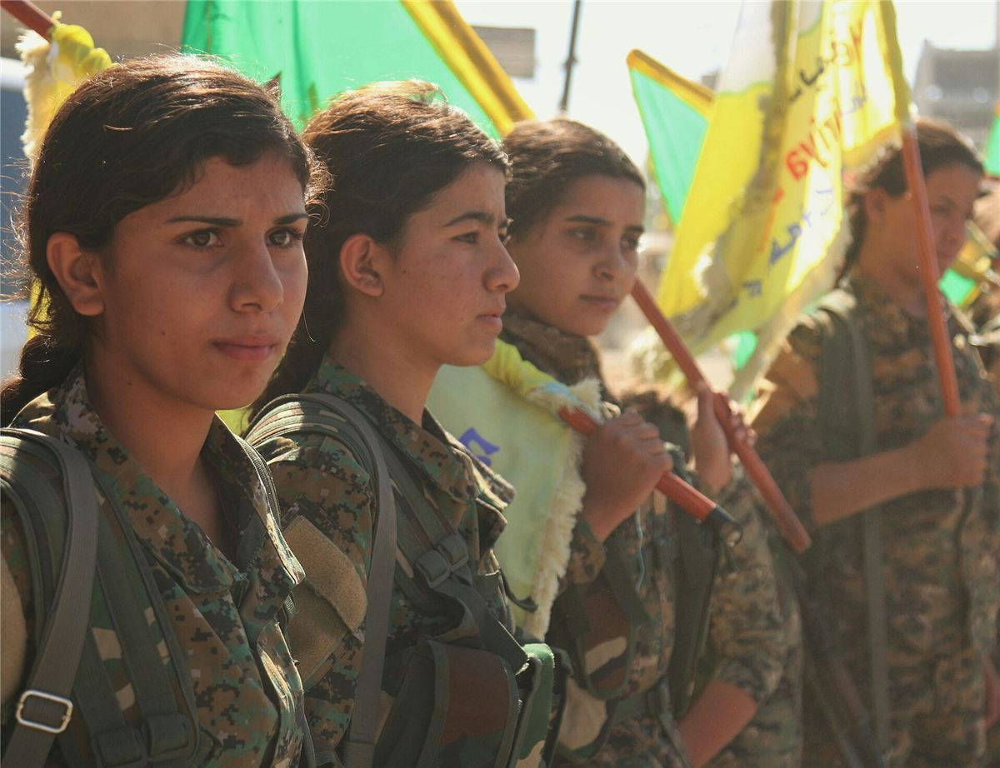

Le peuple kurde, entre 30 et 40 millions de personnes, vit partagé entre la Turquie, l'Iran, l'Irak et la Syrie, sans État et souvent persécuté. Le nord de la Syrie, le Rojava (« l'Ouest » en kurde), est devenu à partir de 2012 le terrain d'une expérience politique suivie dans le monde entier.
Le Rojava ne se dit pas anarchiste. Son projet, le confédéralisme démocratique, s'inspire pourtant en partie du municipalisme libertaire de Murray Bookchin, et des volontaires anarchistes y ont combattu.
Du PKK au confédéralisme démocratique
- 1978 : fondation du PKK (Parti des travailleurs du Kurdistan), marxiste-léniniste, qui mène à partir de 1984 une guérilla contre l'État turc.
- 1999 : son fondateur, Abdullah Öcalan, est capturé et emprisonné sur l'île d'İmralı.
- En prison, Öcalan lit notamment Murray Bookchin et rompt avec l'objectif d'un État kurde. En 2005, il publie la déclaration du confédéralisme démocratique : une démocratie sans État, fondée sur des communes et des conseils fédérés, la libération des femmes et l'écologie.
2012 : la révolution du Rojava
Pendant la guerre civile syrienne, le régime de Bachar al-Assad retire ses troupes du nord du pays en juillet 2012. Le mouvement kurde lié à ce projet prend en main les villes : il crée des communes, des conseils, des forces d'autodéfense (YPG, et les unités de femmes YPJ). En janvier 2014, trois cantons (Afrin, Kobanê, Cizîrê) proclament leur autonomie et adoptent un Contrat social.
Kobanê et la guerre contre l'État islamique

De septembre 2014 à janvier 2015, la ville de Kobanê, assiégée par l'État islamique, résiste rue par rue. Elle devient un symbole mondial. Les Forces démocratiques syriennes (FDS), coalition kurde, arabe et syriaque, libèrent ensuite Raqqa (2017) puis le dernier bastion de l'EI à Baghouz (mars 2019), au prix de plus de dix mille morts dans leurs rangs.
Chronologie
- 1978Fondation du PKK.
- 1999Capture et emprisonnement d'Abdullah Öcalan.
- 2005Déclaration du confédéralisme démocratique.
- Juillet 2012Le régime syrien se retire du nord : début de la révolution du Rojava.
- Janvier 2014Autonomie des trois cantons et adoption du Contrat social.
- 2014-2015Siège et libération de Kobanê.
- 2016-2018Fédération du nord de la Syrie, puis Administration autonome du nord et de l'est de la Syrie (AANES).
- Mars 2018L'armée turque et ses supplétifs occupent Afrin.
- Mars 2019Chute du dernier territoire de l'État islamique à Baghouz.
- Octobre 2019Nouvelle offensive turque entre Serê Kaniyê et Girê Spî.
- Décembre 2024Chute du régime de Bachar al-Assad.
- 2025Accord de principe entre les FDS et le nouveau pouvoir de Damas sur l'intégration des institutions du nord-est ; le PKK annonce sa dissolution. La situation reste mouvante.
En vidéo
Trois vidéos de la chaîne Hydre aux mille têtes, une histoire de la révolte : de l'histoire kurde au Rojava, en passant par les idées d'Abdullah Öcalan. Clique sur une vidéo pour la lancer : rien n'est chargé depuis YouTube avant ton clic.
Toute la playlist sur YouTube ↗
Dans ce dossier
- L'organisation : communes, conseils et co-présidence, avec schémas.
- Révolution des femmes, écologie et critiques.
Sources et pour aller plus loin
Lire
- Un autre futur pour le Kurdistan ? Municipalisme libertaire et confédéralisme démocratique, Pierre Bance, Noir et Rouge, 2017.Une étude libertaire détaillée et critique.
- Kobane Calling, Zerocalcare, Cambourakis, 2016.Une bande dessinée drôle et bouleversante : un dessinateur italien au Rojava pendant la guerre.
Sur le web
- Le Rojava sur WikipédiaHistoire et situation.
- La bataille de KobanêLe tournant de 2014-2015.
- L'Administration autonomeSes institutions aujourd'hui.
Dossier rédigé par la bande à Mamie à partir de travaux d'historiennes et d'historiens et de textes des mouvements concernés. Libre de reproduction.